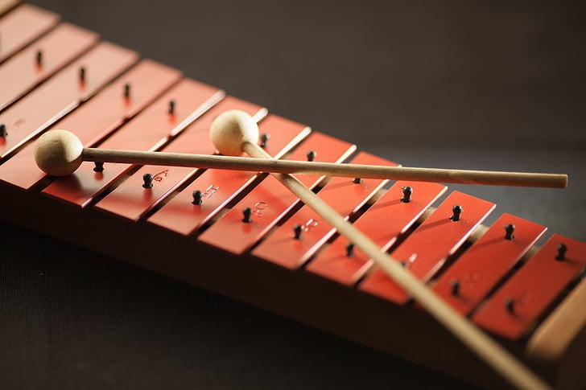
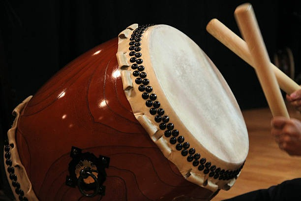

Bateria
Conjunto de instrumentos de percussão tocados simultaneamente por um músico. É responsável pelo ritmo em muitos estilos musicais, especialmente rock, pop e jazz.
Instrumentos que criam ritmo e impacto através de batidas e vibrações.
Conjunto de instrumentos de percussão tocados simultaneamente por um músico. É responsável pelo ritmo em muitos estilos musicais, especialmente rock, pop e jazz.

Instrumento de percussão formado por lâminas de madeira afinadas. As notas são produzidas ao bater nas barras com pequenas baquetas. É muito usado em músicas educativas e orquestras.

Instrumento de percussão presente em diversas culturas, produzido pelo impacto sobre uma membrana esticada. É utilizado principalmente para marcar ritmo e intensidade nas músicas.